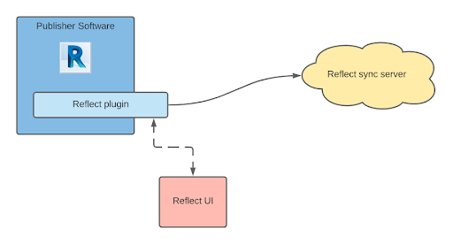
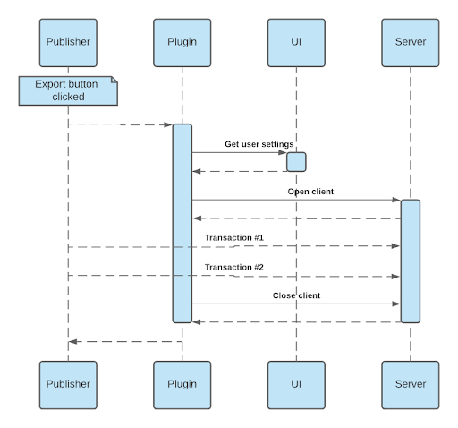
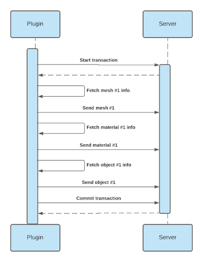
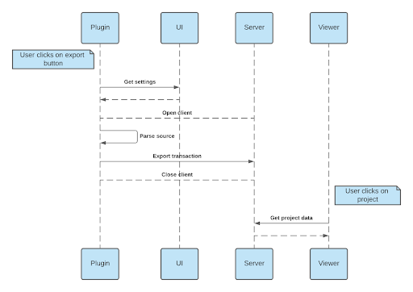
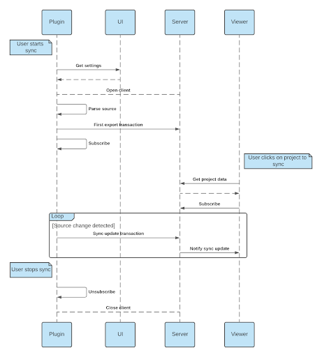

Reflect Publisher API
Getting started
This documentation is intended for anyone who wants to create a plugin to publish data to Unity Reflect.
For general information about using Unity Reflect, see the user manual.
Recommended developer setup
Unity Reflect
To use the Publisher API, Unity Reflect must be installed on your machine, including both the local sync service and the Reflect UI. See Installing Reflect for instructions.
Licenses
To run the plugin you create, you need a valid Reflect license.
To use the Editor workflow, you also need a valid Unity Pro license.
Local sync service
When running your plugin, you can choose which server to export your project to.
You can test your plugin by exporting data to the Reflect cloud server, but this option doesn't allow you to see the service logs if anything goes wrong during the export session. For this reason, we recommend sending data to a local sync service instead. This service is automatically installed when you install the Reflect Core component in the Reflect installer.
When installed, the local sync service runs as a Windows service.
- To manage the service, go to Task Manager > Services > Unity Reflect.
- To access your local service logs, go to
C:\ProgramData\Unity\Reflect\Logs\SyncService.
Editor workflow
There are multiple ways to confirm that your plugin sends the correct data, the most straightforward of which is to use the default Reflect Viewer (which can be installed with the Reflect installer).
However, the default Viewer offers limited options for inspecting and debugging data. For this reason, we suggest using the Editor workflow instead. With this workflow, you can closely inspect the assets your data has been converted into from the Unity Editor.
Note: Unity Reflect is currently focusing its support on Unity 2019.4 LTS.
The Editor workflow requires a valid Unity Pro license.
For more information about the Editor workflow, see the developer guide.
Reflect plugin architecture
Usual plugin flow

The Unity Reflect plugin is integrated into the publisher software as a native add-on. When the user wants to export a source project, the plugin can invoke the Reflect UI to retrieve settings for the export session including the user’s Unity account, target project and sync server (whether local, on a local network, or hosted in the cloud).
The plugin can then connect to the selected sync server and query the publisher software for model data (meshes, textures, materials, objects, instances) to send to the server immediately through transactions.
When the plugin has finished sending the model data, it can close communication with the server and free the export process.

Native plugin prerequisites
A Reflect plugin is typically an add-on of the desired publisher software, which means:
- The plugin needs the ability to retrieve model information (geometry, materials, metadata, or anything relevant), potentially through the software API, and
- Ideally, the plugin can integrate seamlessly into the software’s UI, to display export and sync buttons for example. Note that this is just the usual Reflect plugin UX, but your plugin can still work without this.
Publisher transactions & flows
Transactions
In Reflect, a transaction is an atomic and self-contained set of elements that the plugin sends to the sync server. When committed, it contains the complete state of the source model.

Simple export flow

The simple export is the most basic Reflect flow:
- The user opens a project in the publisher software.
- The user clicks the Reflect Export button.
- The Reflect UI appears for the user to select a target Unity project and sync server.
- The plugin parses and sends the project to Reflect. This may take some time.
Once the simple export has been performed, any viewer with the proper read access can open the exported project.
In order to perform a simple export, the plugin should use a single transaction to send the whole project at one time.
Sync flow

The sync is an advanced flow that can be leveraged by the user to save a lot of time when iterating over their source project.
- The user opens a project in the publisher software.
- The user clicks the Reflect Export button.
- The Reflect UI appears for the user to select a target Unity project and sync server.
- The plugin parses and sends the project to Reflect (sync first export). This may take some time.
- After the first export is complete, the plugin stays alert to any changes in the source model (via the software’s API).
- When there is a change in the source project, the plugin automatically sends this information to the server without any additional UX steps for the user. Each of these steps are called sync updates and typically take less time than the initial export.
- The plugin stops observing changes when the user disables the sync mode in their publisher software.
Once the first export is performed, any viewer with read access can open the exported project and be up to date with the latest publisher changes. The user can also click the sync button to enable Sync Mode in the Viewer to automatically reflect any subsequent changes in the Viewer.
To perform a sync:
- The first export should behave exactly like a first export, but the plugin should not close the publisher client when the export is complete (as it will be used in subsequent transactions).
- Whenever the plugin is notified of a change, it should send the delta information through a new transaction to the same publisher client. To reduce parsing time, there is no need to send unchanged data, but only the following:
- RemoveObjectInstance when an object instance has just been deleted
- Send when an item has just been added or modified. If the sent item already exists in the server, it will be overridden.
- The publisher client can be closed when the user disables Sync Mode.
Reflect UI
The Reflect Publisher API provides an endpoint to display the Reflect UI as an external process and to retrieve whatever settings the user has chosen for their export session. Note that this assumes that the Reflect Core component has been installed into the user’s machine: if not, an exception is thrown.
This method takes a the following input arguments:
- pluginName, pluginVersion: These indicate the name and the version of the plugin you’re developing, which are used by the Reflect UI to display and filter exported projects.
- publishType: This enum indicates what publish flow the user is going to use (simple export or sync).
Finally, this method returns a PublisherSettings instance containing user settings data. If null, it means that the user cancelled the operation: otherwise, it contains useful information such as target project and sync service. Note that this instance can be programmatically modified after being returned: for example, to enforce additional Reflect rules. See (Customize PublisherSettings)[#customize-publishersettings] for more details.
The publisher client
Purpose and life cycle
In Reflect, the publisher client abstracts a connection between your plugin and its target project and sync server during an export session. This means that its life cycle is tightly linked to the export session’s: the publisher client should be opened immediately after the user provides their settings in the Reflect UI and closed as soon as the export session (either simple export or sync) is done.
The client’s OpenClient method takes 3 input arguments to specify information about the upcoming publish session:
- sourceName: This is the public name of the source project. It doesn’t necessarily have to be unique, but it will be used throughout Reflect for the user to identify this project.
- sourceId: This identifies the source project and should be unique and persistent over multiple publishing sessions. Our recommendation is to use the (sanitized) source file name.
- settings: This is where you should provide the PublisherSettings instance that you retrieved from the Reflect UI. You can customize the settings further before providing them to the OpenClient method.
Customize PublisherSettings
After the Reflect UI call, the returned PublisherSettings instance already contains some information about the upcoming publish session. However, it is possible to customize it further by tweaking some values in this instance before you open the Publisher Client.
Native settings
The settings you can modify in the PublisherSettings instance are:
- LengthUnit & CustomUnitCoefficient: Specify which length unit will be used for geometry and transforms.
- PreserveUvs: Specify whether the unit conversion should be applied to UV.
- AxisInversion: Specify the mathematical basis your vertex and transform info come from.
Rules
The PublisherSettings instance exposes a Rules property that you can feed with JSON content to specify which rules you want the sync server’s rule engine to apply automatically. We currently support only a limited number of predefined conditions and actions.
Conditions
Conditions must be fulfilled in order for the action to take place in the sync server.
| Name | Can be applied on | Description | Inputs |
|---|---|---|---|
| ConditionGroup | Anything | Groups multiple conditions with a satisfaction criteria. | GroupCriteria: Any or All Conditions: Condition[] |
| ParameterValueComparison | SyncObject, SyncObjectInstance | Detects whether the metadata contains a specific key, or if this parameter equals a specific value. | ComparisonCriteria: Equals or Contains IsCaseSensitive: bool ParameterName: string ParameterValue: string |
| SyncTypeComparison | Anything | Returns true if the model has the expected type. | SyncType: String |
Actions
Actions are applied on a model only if the corresponding condition has been validated for this model. An immediate action takes place instantly and a delayed action takes place when the transaction is committed.
| Name | Type | Can be applied on | Description | Inputs |
|---|---|---|---|---|
| GroupRootObjects | Delayed | SyncObjectInstance | Groups or merges instances by metadata value for a specific key. | BaseName: String ParameterName: String Method: Group or Merge |
| MergeChildObjects | Immediate | SyncObject | Merges the object’s children. | |
| ReparentInstances | Delayed | SyncObjectInstance | Reparents instances under a single parent object. | ParentCondition: Condition ChildrenCondition: Condition Method: Group or Merge ParameterNamePairs: { ParentParameterName : string ChildrenParameterName : string } |
| ScaleAndFlipInstance | Immediate | SyncObjectInstance | Applies a scale and a YZ axis flip. | ScaleFactor: Float FlipYZ: Bool |
| ScaleAndFlipObject | Immediate | SyncObject | Applies a scale and a YZ axis flip. | ScaleFactor: Float FlipYZ: Bool |
Transactions
This section of the document covers technical details about transactions: see Publisher transactions and flows for a broader overview.
Once your publisher client is opened, you can create a transaction from it. Note that you cannot start a transaction if there already is a pending transaction attached to your client: transactions are not to be used concurrently.
After your transaction is started, you can begin parsing the source and perform the following actions along the way:
Send an item
If the item already exists in the server, it is overridden by the new version.
Remove an instance
This is only needed for a sync update transaction to remove instances that have been created in previous transactions. Note that you don’t need to remove assets (other than instances) because the sync server automatically determines what is no longer a dependency.
When your transaction contains every desired change, you’ll need to commit it to confirm and officially push the changes to Reflect. Before the transaction is committed, the transaction remains “internal” and cannot be seen by viewers.
Reflect data
SyncModel and SyncId
A SyncModel is a model that can be sent through Reflect from the Publisher to the Viewer. When the Viewer downloads a SyncModel, it converts it into the correct Unity asset. The following SyncModels are supported:
- SyncObject
- SyncObjectInstance
- SyncMesh
- SyncMaterial
- SyncTexture
Any SyncModel needs a name, used in the Viewer to properly display and identify the model, and an ID, represented by the SyncId class. This ID is used by Reflect to identify a specific model, and it is the plugin’s responsibility to provide a valid ID that meets the following requirements:
- The ID must be unique amongst the models of the same type in a specific source project. Otherwise, models will override each other when sent to the server.
- The ID must be persistent over multiple publishing sessions, otherwise:
- The plugin may waste time sending a model that the server has already stored under a different ID.
- The Sync flow will not work as expected, as the Viewer relies upon the IDs to retrieve and modify existing models.
SyncObject
A SyncObject is the Reflect equivalent of a Prefab in Unity: it’s an object definition that you can reference multiple times without duplicating data, thanks to SyncObjectInstances. When SyncObjects are downloaded in Unity, they are converted into cached GameObjects (or prefabs in the Editor workflow).
Hierarchy
SyncObjects have a children list property that you can use to support hierarchy in your plugin. Any child is converted directly to a child GameObject in Unity and doesn’t need to be referenced by a SyncObjectInstance. Note that nested SyncObjects suffer from data duplication, as they are not instantiated and we don’t support nested instantiating.
However, keep in mind that the default Viewer is instance-oriented: some of its features (like streaming, BIM filtering, and BIM information) work on a per-instance basis. These features won't benefit the children of a SyncObject as they do not directly rely on a SyncObjectInstance to be instantiated. The best way to design your plugin is to make any object that makes sense as a whole a root SyncObject.
For example, if you think there is value in having all the screws of a chair separated and independent in the Viewer, then you should send each screw as a SyncObjectInstance. If the screws have the same model definition, then you can use only one SyncObject and reference it in all your instances.
However, if screws are too precise a granularity for you, you might prefer sending the chair itself as a SyncObject, and have screws as children SyncObjects. Then, the chair would be the only object you’d be able to select and inspect from the viewer.
Mesh and materials
A single SyncObject can only reference one mesh: however, it can apply several materials to this mesh. This is possible because a SyncMesh can have multiple submeshes, each of which can be assigned to a different material.
SyncObjectInstance
A SyncObjectInstance is to the SyncObject what a GameObject is to the Prefab. When SyncObjectInstances are downloaded in Unity, they are converted into GameObjects (assuming its referenced SyncObject is provided: otherwise, an exception is thrown).
SyncObjectInstances are the only models you need to remove during a sync, because they are the Viewer’s root assets. If during a sync a mesh asset is not an instance dependency anymore, for any reason, Reflect automatically determines that it doesn’t need to download it.
The SyncObjectInstance is where you should provide metadata. The Viewer leverages this information to filter and reorder downloaded instances. Metadata is represented by a simple dictionary of key/pair values.
SyncMesh
A SyncMesh is converted to a Unity mesh in the Viewer. A SyncObject can only reference one single mesh, but the mesh can contain multiple submeshes, which allows multiple materials for one mesh.
The SyncMesh class exposes the Vertices, Normals, and Uvs properties to populate vertex geometry information, whereupon the SyncSubMesh class can provide the triangles data.
SyncMaterial
A SyncMaterial is converted to a Unity material in the Viewer. The materials rely upon a custom Reflect shader that is built on top of Physically Based Rendering (PBR), hence the usual PBR properties it exposes.
When designing a SyncTexture, SyncMaterials should use SyncMaps, which add additional post-processing settings to the texture such as UV tiling and offset. This allows your plugin to send one single texture instead of sending a separate texture for each post-processing variant.
SyncTexture
A SyncTexture is converted to a Unity texture in the Viewer. This asset exposes a Source property as a byte array, so you only need to read the bytes from your JPG or PNG texture file and write them in the SyncTexture.